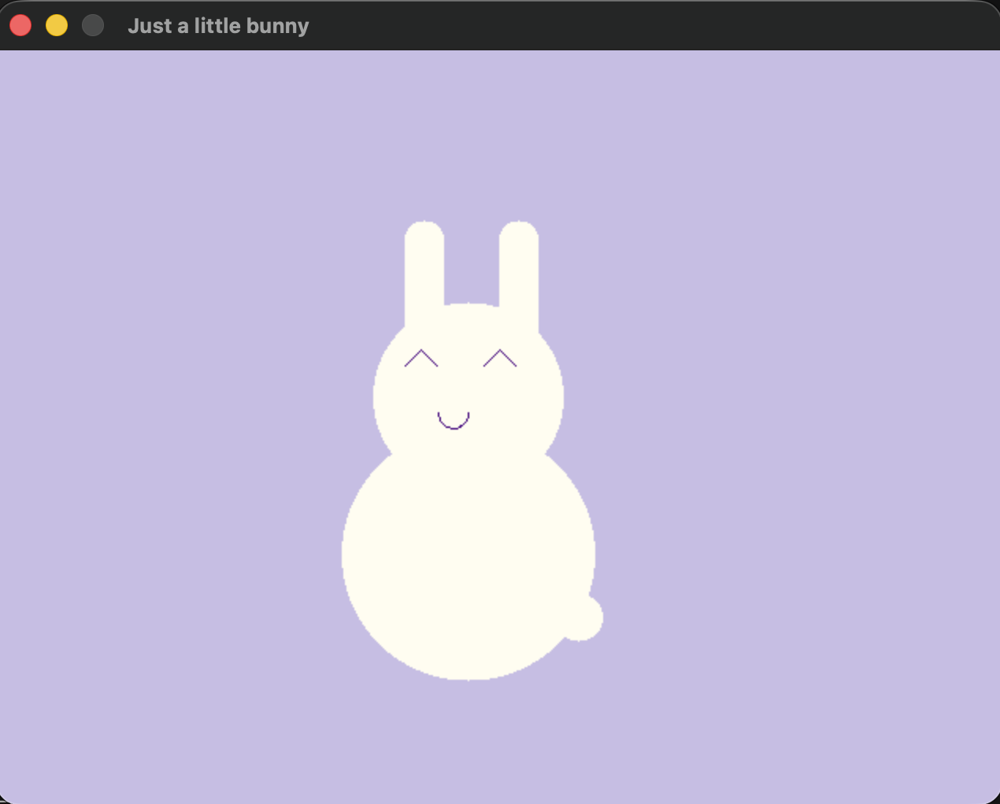

Daily notes on C++, failures, and victories.
January 14, 2026
The Geometric Bunny
The textbook assignment was to draw a holiday scene using only the basic SSDL tools we know so far (circles, rectangles, lines). I decided to engineer a cute, "lofi aesthetic" bunny instead. 🐰

The Challenge: How do you draw cute features when you only have stiff, upright geometric shapes? You have to get a bit creative with layering.
-
The Ears: A rectangle for the base + a circle on top to round it off.
-
The Smile Hack: This is my favorite part. I couldn't draw a curved "smile arc". So, I drew a full circle for the mouth... and then drew a rectangle of the fur color right over the top half to hide it. Is this bunny smiling or screaming? I guess you'll never know now.
It felt less like drawing and more like solving a puzzle with limited pieces. Sometimes the best way to draw something is to draw over it.
👉 See the full code on GitHub
January 8, 2026
The Drunk Cube & The Lie of Graph Paper.
Well... I always knew that computers give you exactly what you ask for, not what you meant. BUT. Today it literally gave me a new perspective.
-
The Task was: Draw a simple 3D wireframe cube.
I sketched it on my iPad first, counted the grid cells, and transferred the coordinates to C++ perfectly.
-
The Glitch: The code worked, but the cube looked "drunk" and distorted. The top face was huge and steep.
I couldn't understand why - the numbers were identical to my drawing!
-
The Epiphany: Turns out, when we draw by hand, our brain "autocorrects" bad perspective.
I drew a depth of "2 cells up, 1 cell right" (~63° angle), which looks fine on paper because lines have thickness and imperfection.
-
The Fix: On a pixel-perfect screen, the angle looks too "steep" for the human eye, and breaks the illusion.
I had to switch to the "45-Degree Rule" - which I didn't know existed - moving X and Y by equal amounts.
Lesson: To make things look "real" on the screen, you have to code them "flatter" than you draw them.
Fun fact that made me jump - this is exactly the core principle of Isometric Graphics in classic games (like Fallout or Diablo).
They use a locked angle (often a 2:1 pixel ratio) to trick the brain into seeing 3D depth on a 2D screen. I basically stumbled upon this mechanic by accident!
January 7, 2026
Terminal Sorcery & The Cup.
-
Level Up: Installed GitHub CLI (
gh) via Homebrew.
Fought with an HTTP 401: Bad credentials error and won by re-authenticating directly from the terminal.
-
Workflow Upgrade: Created the ssdl-cup repository
completely from the command line using
gh repo create.
No browser clicks anymore. Felt like a true Tech Witch. 🧙♀️
-
The Code: The Cup project is now live! It demonstrates coordinate mapping
and basic shape rendering in C++.
January 5, 2026
Housekeeping & Design Day.
Today wasn't about writing C++ code, but about creating a proper home for it.
-
Git Surgery: Realized I was about to push copyrighted textbooks to GitHub.
Performed an emergency
rm -rf .git and restructured the repository.
The bug project now lives in its own clean repo: witch-bug.
-
Website Glow-up: Upgraded this Digital Garden from a plain text file to a real site with navigation and Flexbox styling.
-
The Cup Plan: Started exercises for Chapter 1. Since SSDL doesn't support complex shapes easily, I designed a coffee cup on graph paper.
Plan to use the "Painter's Algorithm" (layering shapes) to create a handle using just a circle and a rectangle.
January 4, 2026
Fixed the "Eboo" bug! I used a for loop to erase the forehead pixels so the hat sits properly. It felt like real engineering. Also fought with Git tokens and won.